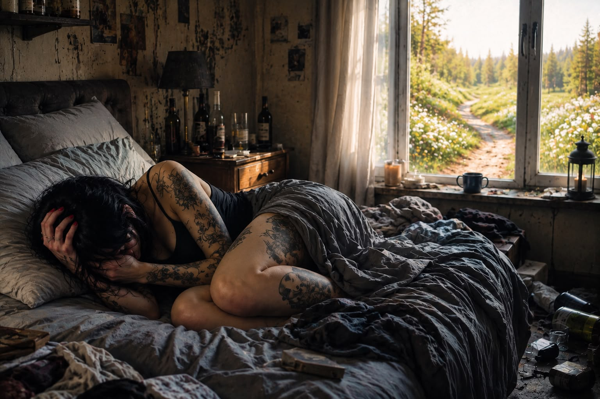

Jeg var tretten år første gang jeg drakk
Jeg var tretten år gammel første gang jeg drakk. Jeg fikk det servert av min egen mor.
Jeg visste det selvfølgelig ikke da. Jeg var bare et barn som oppdaget noe som fikk verden til å bli stille.
Men den stillheten skulle koste meg mer enn jeg kunne forestille meg.
Jeg glemmer det aldri. Varmen som bredte seg nedover brystet. Stillheten i hodet, som om alle tankene mine ble skrudd av.
Denne ukjente følelsen av at jeg plutselig likte meg selv. Jeg følte meg uovervinnelig. Verden lå for mine føtter.
Lite visste jeg at dette skulle bli en kamp jeg kom til å utkjempe mot meg selv de neste tre tiårene.
Å leve i aktiv rus er en av de vondeste plassene et menneske kan eksistere.
For deg selv.
Og for menneskene rundt deg.
Løgnens sykdom har jeg hørt noen kalle det. Jeg ville lagt til skammens, uverdighetens og mørkets sykdom.
For den fyller dagene dine med skam, uverdighet og mørke. Og den eneste måten å holde ut på, er å lyve.
Til deg selv.
Du lyver så hardt at du til slutt tror på det selv.
Hvordan ellers skal du forsvare valgene du tar? Pengene du bruker? Alle enhetene du heller nedpå?
Du bagatelliserer. Pynter på det. Rettferdiggjør det.
Når du våkner med nerver. Med hodepine. Når du ligger i senga og ikke vet hva som gjør mest vondt.
Å bli liggende.
Eller å stå opp.
Angsten brer seg. Hjertet hamrer så hardt at det suser i ørene. Munnen er tørr. Du må tisse, men da må du reise deg.
Da må du møte ditt eget blikk i speilet.
Så du blir liggende litt til.
Tankene spinner. Det som virket helt normalt kvelden før, er blitt til noe du ikke lenger kan stå inne for.
Du sier til deg selv at nå er det nok. Dette kan ikke fortsette.
Du lover deg selv en ny start.
Men utover dagen finner du grunner til å fortsette én dag til.
Kanskje var det ikke så ille likevel.
Kanskje et par–tre enheter ikke gjør noen skade.
Du glemmer å minne deg selv på at det aldri stopper der.
At det aldri blir nok.
At du er som en bøtte med hull. Umulig å fylle.
Og hvor skal du be om hjelp?
Fastlegen?
Konsekvensene kan føles enorme. For mange oppleves dette fortsatt som skammens sykdom. Og er du uheldig og møter feil menneske, blir skammen bare større.
Og hvordan skal du hjelpe deg selv når du er i evig konflikt med deg selv?
Du sitter i et fengsel.
Det eneste fengselet der nøkkelen ligger på innsiden.
Og de du tilbringer tiden med – de som er like tørste som deg – hvordan skal de hjelpe deg?
De har mer enn nok med å forsvare sitt eget forbruk.
Og selv om nøkkelen er der, klarer du ikke gripe den.
For sykdommen overbeviser deg om at du ikke trenger den.
At du har kontroll.
At du kan slutte når du vil.
At du bare skal gjennom denne helga.
Denne ferien.
Denne bursdagen.
Dette glasset.
Den hvisker at i morgen blir annerledes.
Men i morgen blir alltid til i dag.
Du lever i en evig forhandling med deg selv.
Den ene delen av deg ber om hjelp.
Den andre lover at dette er siste gangen.
Du tror på begge.
Hver eneste dag.
Det er det som gjør avhengighet så grusom.
Det handler ikke om manglende viljestyrke.
Det handler om å kjempe mot seg selv, sin egen hjerne.
Mot den samme hjernen du er avhengig av for å redde deg.
Og mens verden ser et menneske som drikker for mye, ser du noe helt annet når du møter ditt eget blikk i speilet.
Du ser et menneske som er utslitt.
Et menneske som skammer seg.
Et menneske som ikke lenger stoler på sitt eget ord.
For du har lovet deg selv å slutte hundre ganger før.
Kanskje tusen.
Og hver gang du bryter det løftet, mister du litt mer av troen på deg selv.
Til slutt er det ikke alkoholen som er den største fienden.
Det er håpløsheten.
Mørket.
Jeg vet ikke hvor mange ganger jeg har prøvd å slutte.
Og hvor mange ganger jeg faktisk har sluttet.
For det har jeg.
Mange ganger.
Problemet – nei, forbannelsen – er at jeg alltid falt tilbake.
Det skulle bare én sprekk til, så var jeg tilbake ved start.
Låst inne igjen.
Som om den delen av meg jeg hadde forsøkt å slukke, endelig fikk oksygen og steg opp til overflaten med all sin kraft.
Og jeg var sjanseløs.
Løgneren.
Selvbedrageren.
Mørket.
Jeg er 238 dager edru nå.
34 uker.
5 712 timer.
342 720 minutter.
Ja.
Jeg teller.
For hver dag er en seier.
238 morgener uten å sitte fast i senga.
238 ettermiddager uten å lete etter en unnskyldning.
238 kvelder hvor jeg har kommet til den samme konklusjonen:
Den bøtta kan aldri fylles.
Uansett hvor hardt jeg prøver.
